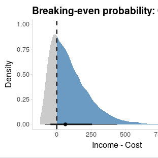
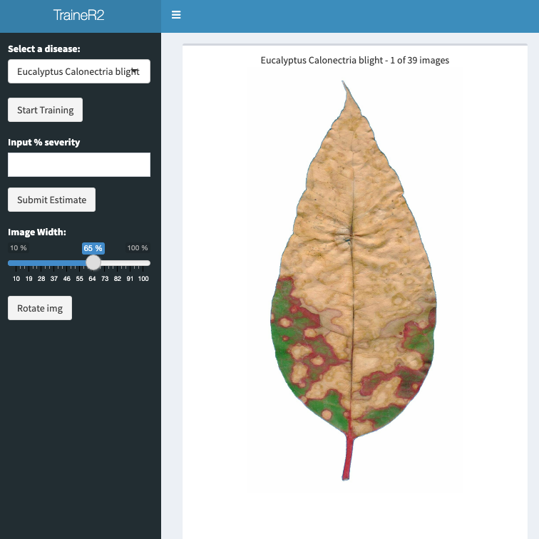
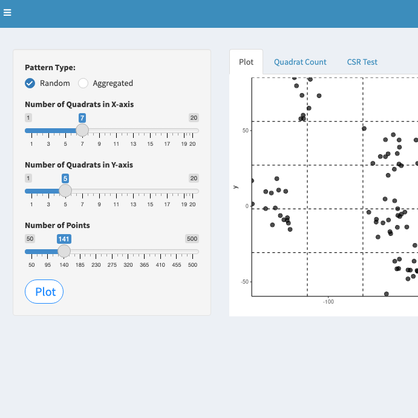
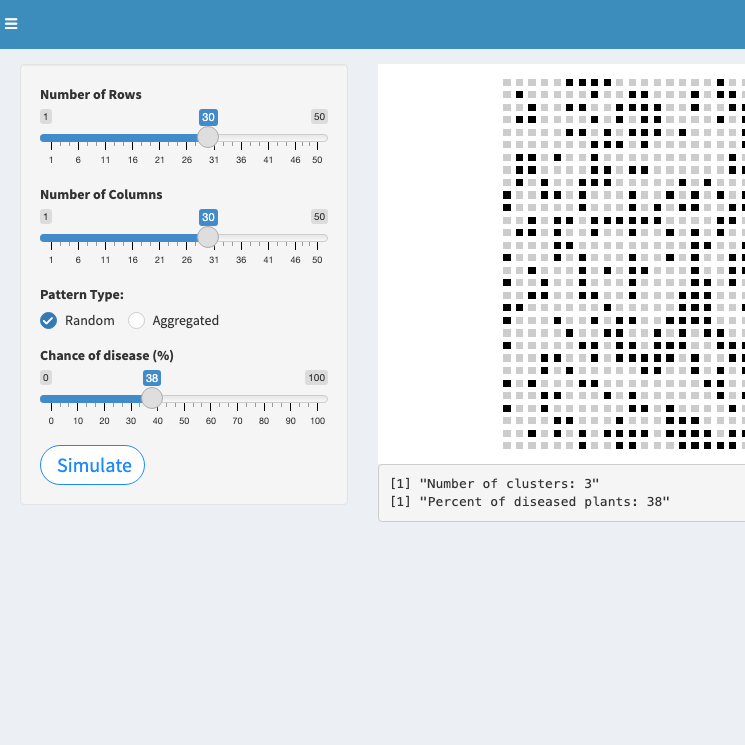
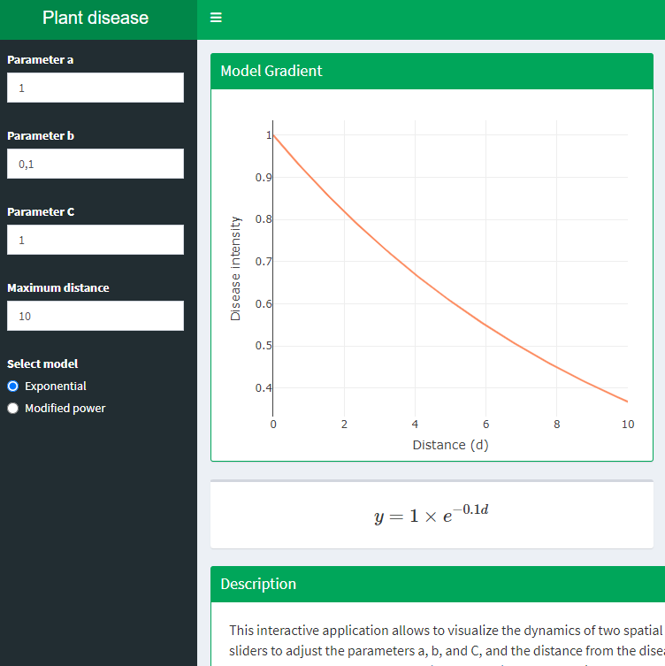
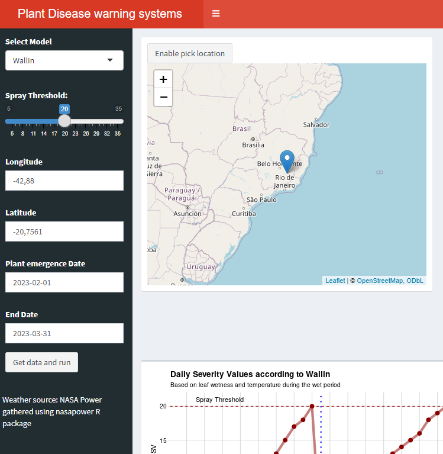
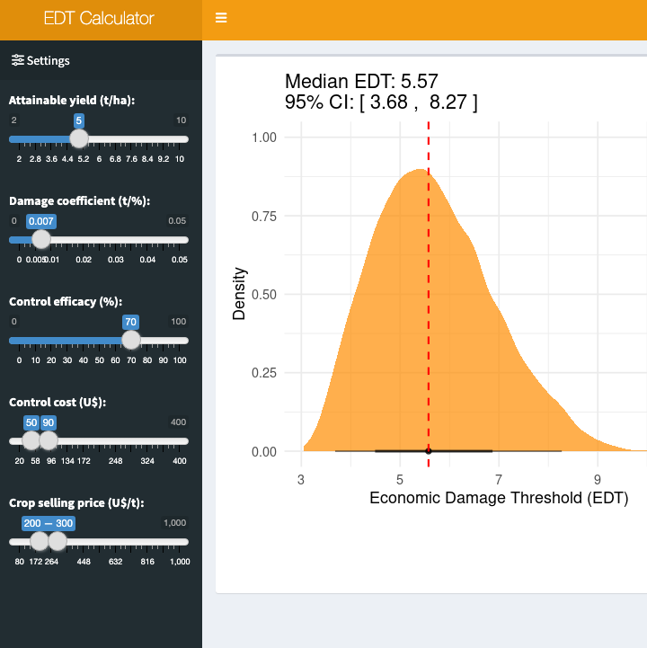
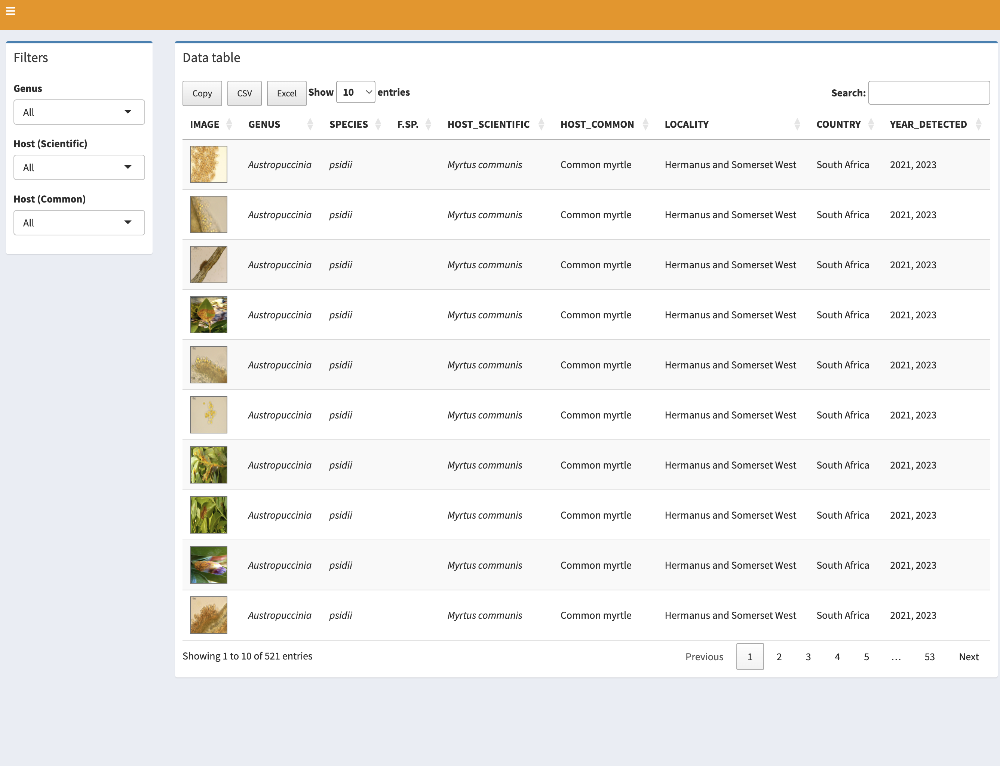
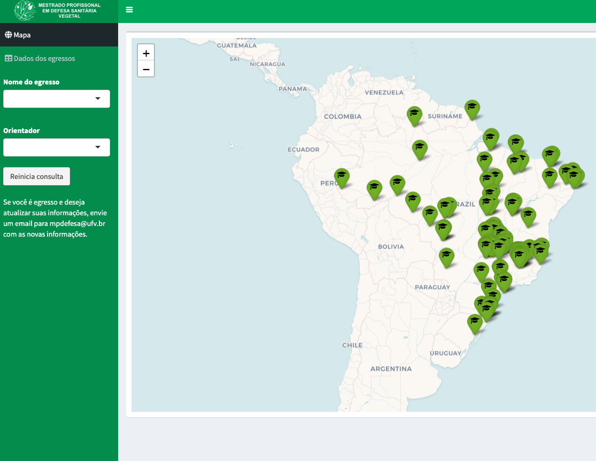
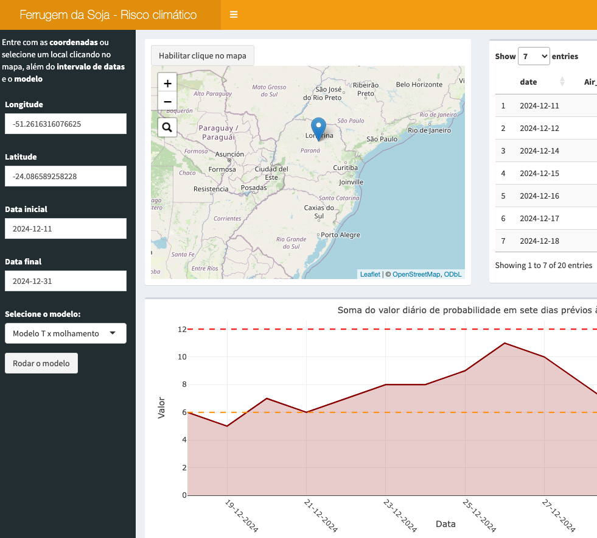

Book

R for Plant Disease Epidemiology (R4PDE) is a dynamic online book rooted on the teaching notes of my graduate course, FIP 602 - Plant Disease Epidemiology, which is offered every year for students in the Graduate Program in Plant Pathology of the Universidade Federal de Viçosa.
This book is for those interested in studying and modelling plant disease epidemics using R. It provides context and showcases various methods for describing, visualizing and analyzing epidemic data collected over time and/or space. Users should have have a foundational knowledge of R to run the examples.
Apps
I have developed, myself or in collaboration with students, web applications to support research and teaching. These are made with R + Shiny.
| Trainer | SADBank | FGSCdb |
|---|---|---|
 |
 |
 |
| A training tool for increasing the accuracy of visual assessments of plant disease severity (percent diseased area). | A curated database of Standard Area Diagrams (SADs) for aiding visual assessments of disease severity. | A georeferenced database of isolates of the Fusarium graminearum clade. Shiny app developed by Kaique S. Alves |
| EphemBrazil | Epidemics | Rusty profits |
 |
 |
 |
| Database of distribution and basic taxonomic information on species of Ephemeroptera (Insecta) recorded in Brazil | Simulation of plant disease progress curves by setting parameters for four populations dynamics models | Rusty profits is a shiny app calculator of the probability of break-even on the costs of fungicides for managing soybean rust in Brazil. App developed by Kaique S. Alves |
| TraineR2 | Spatial data simulation 1 | Spatial data simulation 2 |
|  |  |  |
| A training tool to increase the accuracy of severity estimates using actual photos of diseased organs. | Simulation of presence-only spatial data for demonstrating random or aggregate patterns. Counts the number of units in user-defined spatial grid. | Simulation of presence-absence spatial data for demonstrating random or aggregate patterns. Calculation of incidence and number of clusters., |
| Spatial Gradients | Warning systems | EDT calculator |
|  |  |  |
| Simulation of plant disease gradients by setting parameters of two gradients models | Calculation of severity values for Wallin and FAST warning systems for plant disease epidemics. Downloads real time data from NASA POWER | Calculation of Economic Damage Thresholds for plant disease management based on four parameters |
| Plant Rust Images | Alumni map | Soybean rust risk |
|  |  |  |
| Interactive Shiny app for a image gallery of plant rusts from South Africa. | Shiny app for a map of alumni of a graduate student program | Shiny app for a risk prediction map of soybean rust based on hourly weather conditions (in Portuguese) |